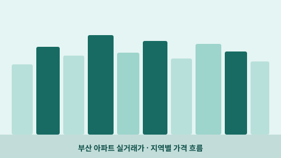

열심남의 노후 준비 프로젝트
데이터로 배우고,
데이터로 배우고,
내일을 준비하는
열심남입니다.
부산의 데이터를 살펴보고, 투자와 건강을 공부합니다.
더 나은 노후를 위해 직접 만들고 기록한 것들을 나눕니다.
부산 데이터랩
궁금한 일상, 데이터로 들여다보기
부산의 아파트부터 스타벅스 상권까지.
직접 만든 네 가지 데이터랩에서 관심 있는 지역을 살펴보세요.
분석자료
공부한 것을, 나눌 수 있는 기록으로
가치투자·AI·노후준비·건강 주제로 직접 작성한 인터랙티브 분석과 인포그래픽입니다. 자료별 기준 시점과 출처를 확인하고 참고하세요.
해당 주제의 자료가 아직 없습니다.
처음 오셨다면 이 글부터
결정적 10년: 50대 미래 설계
100세 시대 은퇴 준비의 핵심을 데이터 인포그래픽으로 정리합니다. 기대수명과 자산 관리 전략을 시각적으로 살펴볼 수 있습니다.
코리아에프티(12410)
HEV시장 성장과 함께하는 현대차그룹의 캐니스터 독점 부품사
에스앤디(260970)
삼양식품의 불닭볶음면과 함께하는 액상소스 독점 공급사
노바렉스(194700)
건강기능식품 ODM의 명실상부한 대장주
솔루엠(248070)
전자가격표시기(ESL)의 글로벌 TOP 2
코나아이(052400)
메탈카드와 지역화폐플랫폼의 강자
파마리서치(214450)
리쥬란 스킨부스터에서 화장품으로 K뷰티의 확장
GPT-5 vs GPT-4 비교 분석
GPT-4와 GPT-5의 성능 차이를 인포그래픽으로 정리합니다. 작성 당시 공개된 정보를 바탕으로 한 비교이며 현재 상황과 다를 수 있습니다.
그릭요거트 완벽 가이드
그릭요거트의 영양성분·효능·브랜드별 차이를 데이터로 정리한 인포그래픽입니다. 건강한 식단 선택에 참고할 수 있습니다.
이런 것도 온비드에서 팔아요?
온비드(공매) 플랫폼에 올라오는 이색 물건들을 소개하는 콘텐츠입니다. 공매의 다양한 면을 재미있게 살펴볼 수 있습니다.
소개
더 나은 내일을 준비하는 방법
열심남
📍 부산
ISTJ꾸준히 배우고, 직접 해보고, 함께 나눕니다.
부산에서 데이터분석과 AI 활용에 관심을 갖고 공부하고 있습니다. 가치투자·부동산 투자·독서·건강 관리를 통해 경제적 준비와 건강한 일상, 배움과 삶의 방향을 함께 탐구합니다.
투자·AI·건강을 주제로 블로그·브런치·팟캐스트에 꾸준히 기록하고, 부산의 공개 데이터를 분석해 대시보드로 공유하고 있습니다.
관심 분야
- 데이터분석
- AI 활용
- 가치투자
- 부동산 투자
- 노후준비
- 건강 관리
- 독서
사내 AI·데이터분석 강사 활동
회사 내부 직원을 대상으로 데이터분석과 AI 이해·활용에 관한 교육을 담당하고 있습니다.
- 실무 중심의 데이터분석 방법론 강의
- AI 도구 활용법 교육
- 실제 업무 적용 사례 공유
AI 활용 공유 활동
AI 활용법과 최신 트렌드를 조직 내외에서 공유하며 AI 도입과 활용을 돕고 있습니다.
- AI 트렌드 정리·공유
- 업무에 바로 쓸 수 있는 AI 활용 팁 전파
소셜미디어
관심사를 나누는 여러 공간
투자와 건강에 관한 기록부터 책과 음악 이야기까지. 블로그·팟캐스트와 인스타그램에서 열심남의 이야기를 만나보세요.